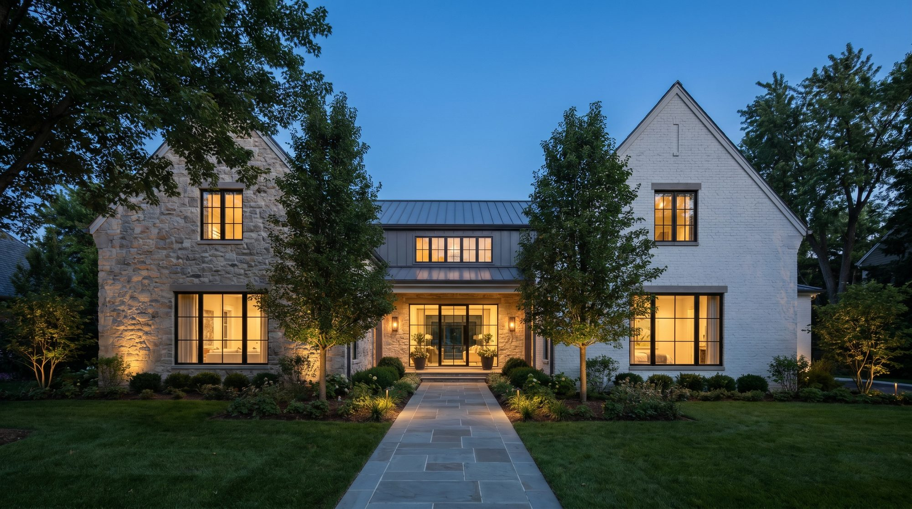
Luxe Development is a design-build studio creating custom homes and luxury renovations where advanced engineering meets uncompromising craft.
No general contractor pointing at the architect. No architect pointing at the trades. From structural design to the final coat of paint, Luxe Development carries the entire build — so nothing is lost in translation between the home you imagined and the home you receive.
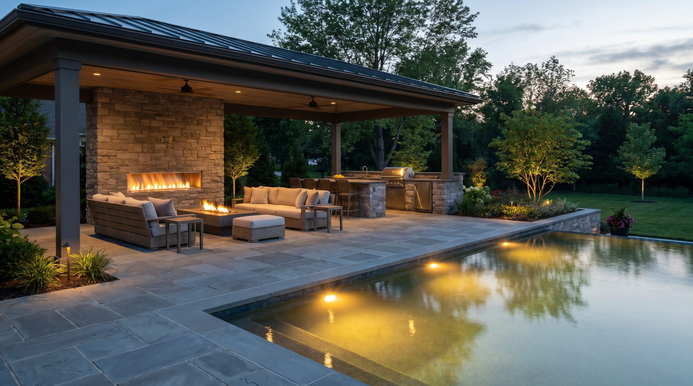
Disappearing glass walls, a covered pavilion and an infinity-edge pool — one continuous space from great room to garden.
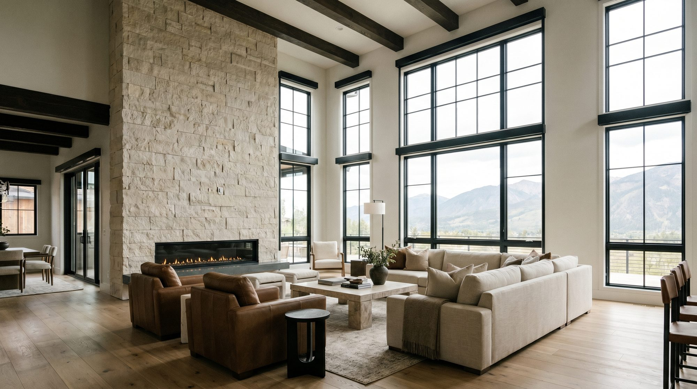
Steel framing let us open the entire main floor to a double-height volume of light, stone and white oak.
Ground-up architecture, engineering and construction, fully in-house.
Existing homes rebuilt to a new structural and aesthetic standard.
Second stories and wings engineered to look original.
The hardest-working room, detailed to the millimeter.
Marble, brass and light, executed like fine cabinetry.
Wine rooms, theaters and lounges that feel original to the home.
Discovery, site analysis and architectural design define the build before a shovel moves.
Every material, finish and fixture is selected, sampled and specified with you.
In-house structural execution with meticulous on-site aesthetic supervision.
The home is walked, documented and delivered exactly as drawn.
Homeowner, Burr Ridge · Rated 5.0 on Google
Based in Lemont, we design and build throughout DuPage, Cook and Will County's most established communities. Don't see your town? Just ask — we likely serve it.
Check My Address"They managed the architecture, engineering and every finish without a single thing slipping. The home we walked into was exactly the home they drew."
"The most organized builder we interviewed — and it showed at every stage. Communication was flawless and the craftsmanship is incredible."
"Our whole-home renovation stayed on scope and on budget. You can feel the quality in every detail. We'd hire Luxe again in a heartbeat."
Across Chicago's western and southwest suburbs — Lemont, Hinsdale, Oak Brook, Burr Ridge, Naperville, Downers Grove, Western Springs and 20+ surrounding communities in DuPage, Cook and Will County.
One company owns the architecture, engineering and construction. You sign one contract and hold one team accountable — instead of refereeing between a separate architect, engineer and general contractor.
Yes. We build ground-up custom homes and take on whole-home renovations, additions, and luxury kitchen, bath and basement projects.
Selections and scope are locked into an itemized budget before construction begins, so the number you approve is the number we build to — with a clear schedule and milestone walk-throughs.
With a complimentary site walkthrough. We'll review your property, discuss your vision, and outline a realistic path, timeline and budget range before you commit to anything.
A selection of recent work, each home designed, engineered and built by our own team across Chicago's western suburbs.
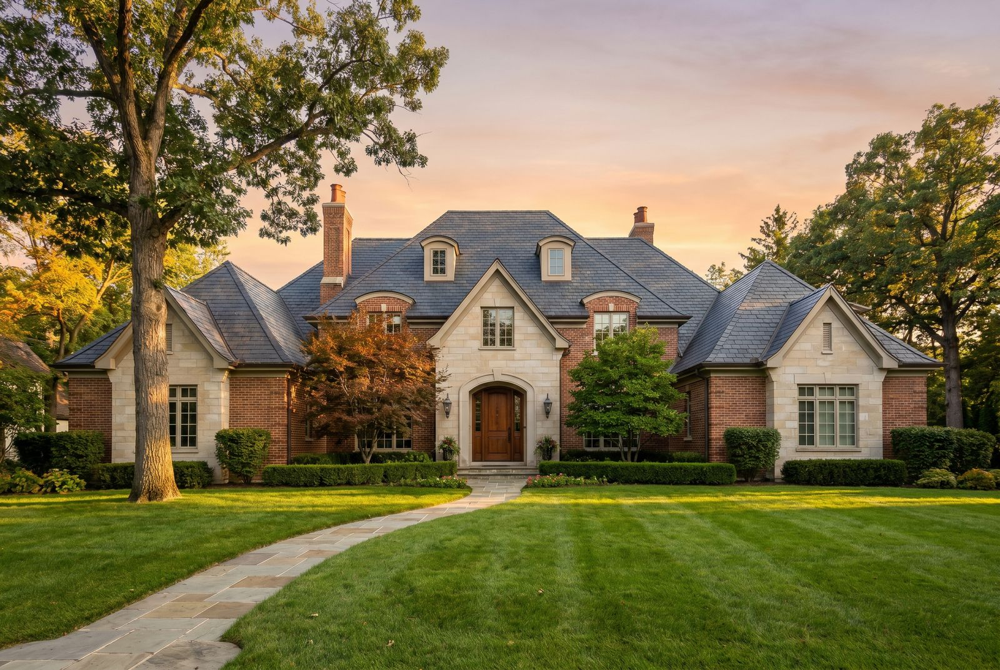
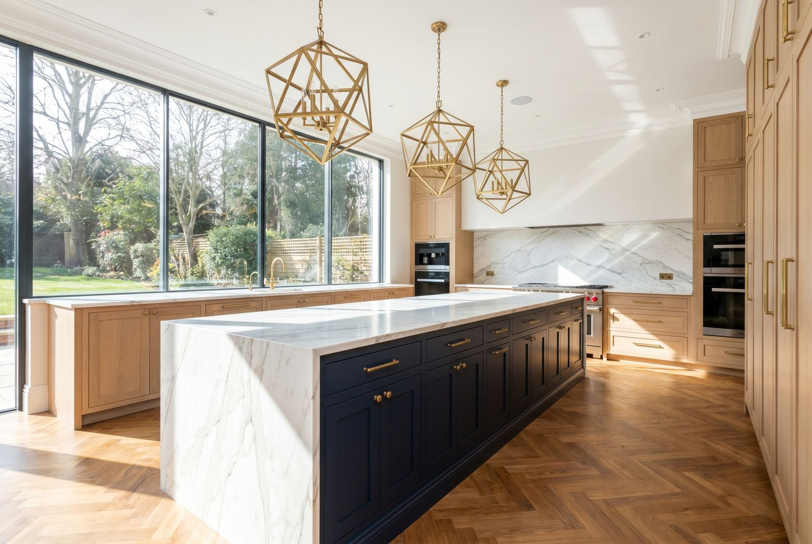
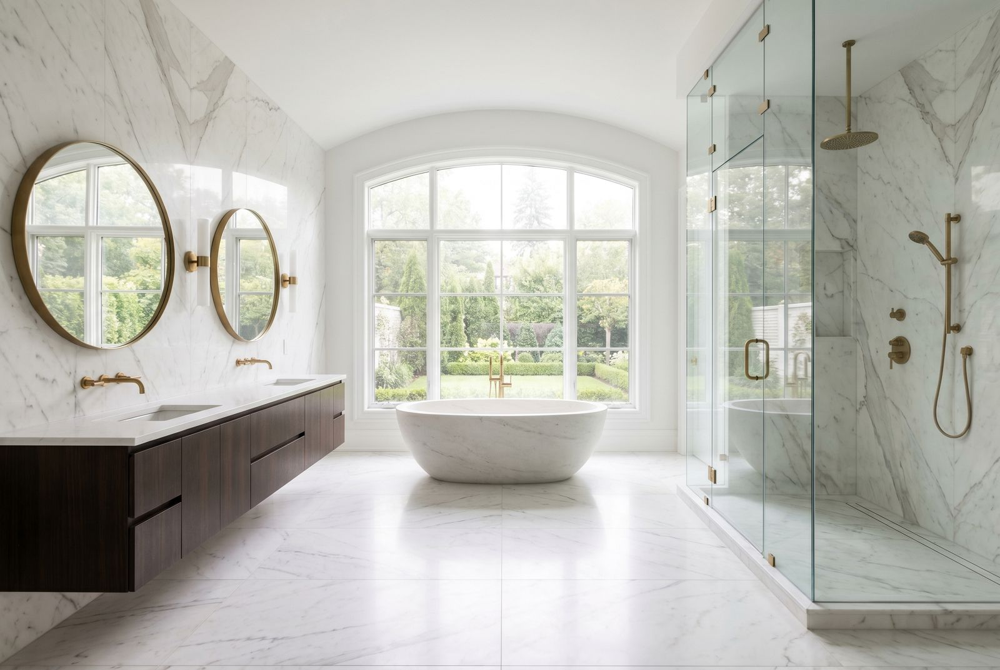
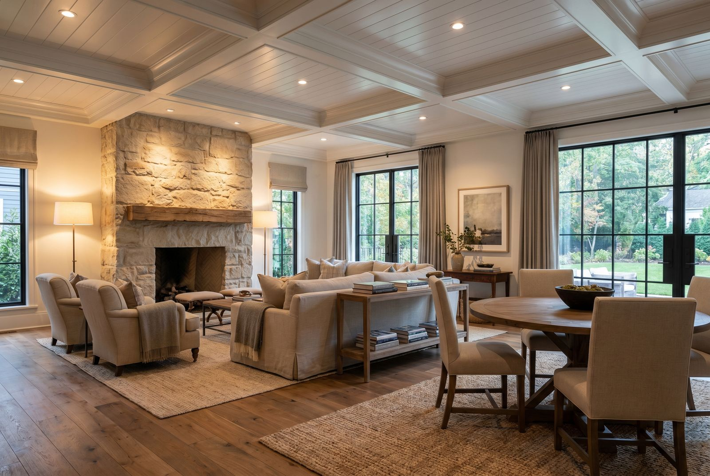
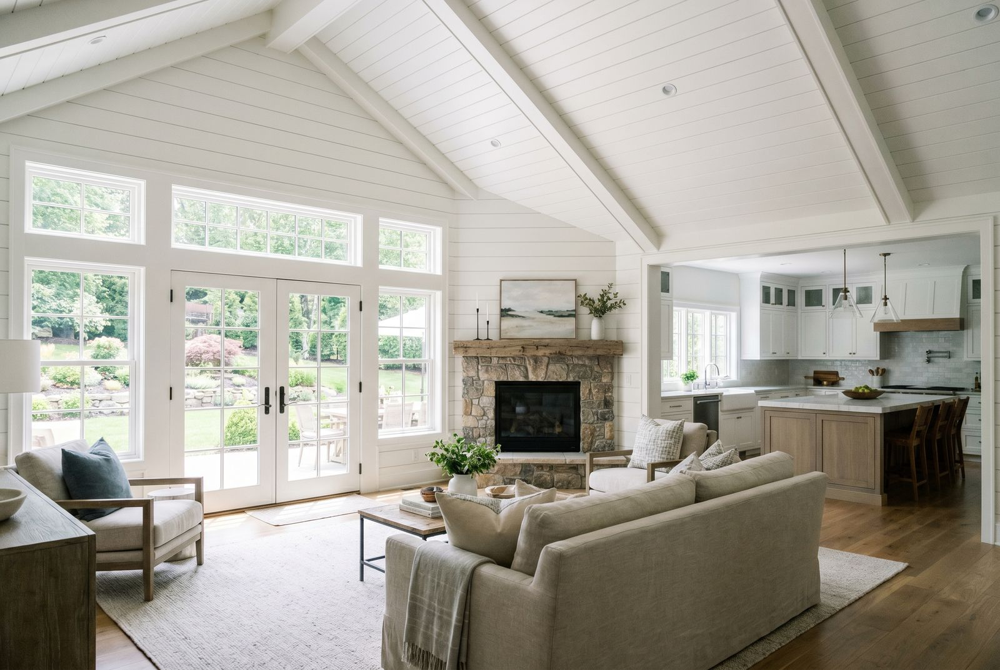
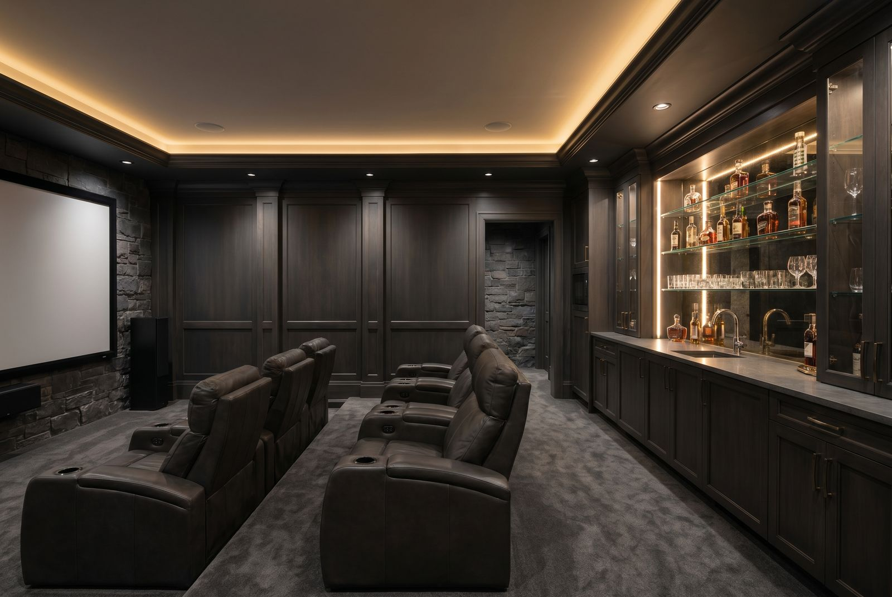
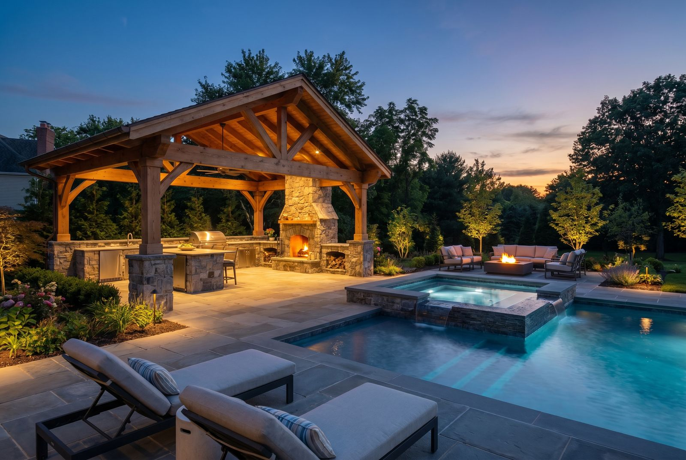
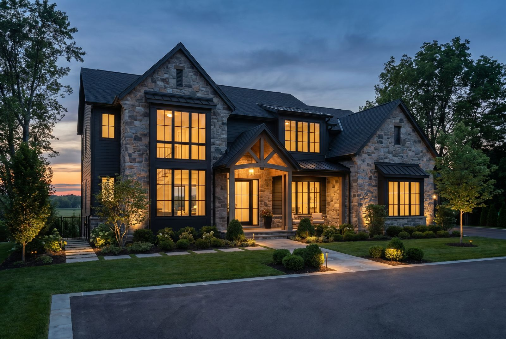
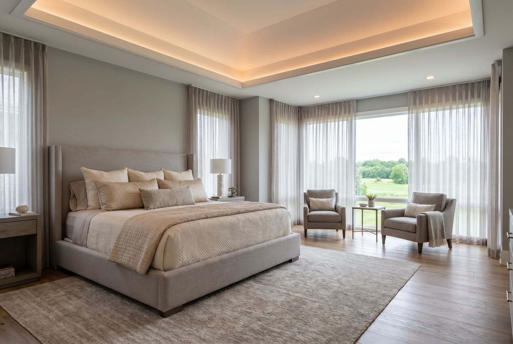
Book a complimentary site walkthrough and we'll map a realistic path from vision to handover.